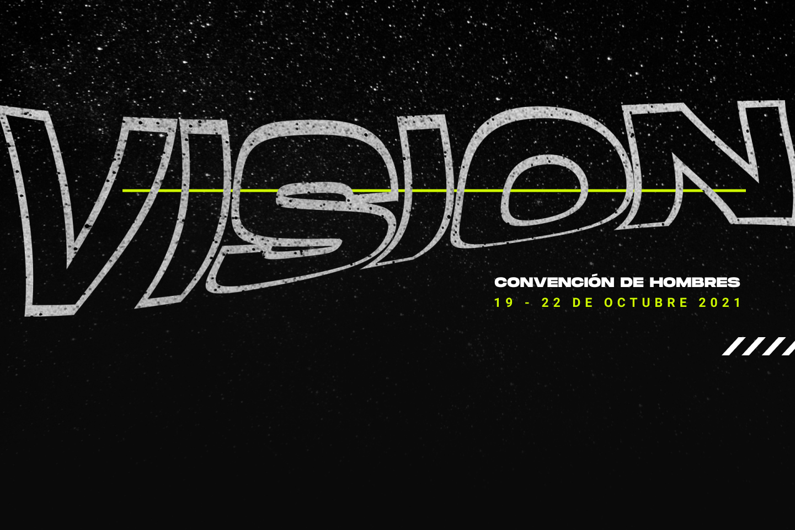

Información
Misión Carismática Internacional es una iglesia Cristiana fundamentada en principios y valores establecidos en la
palabra de Dios. Estamos en Bucaramanga desde el 20 de Julio de 1989 llevando el mensaje de Jesús por toda la
región.
MCI -
Convención de hombres (Bogotá)
Del próximo 19 a 22 de Octubre se estará realizando la próxima convención de hombres en nuestra sede principal
Bogotá, Colombia. Aún tienes plazo de inscribirte y asistir a éste gran tiempo.
